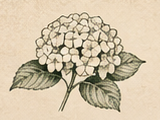
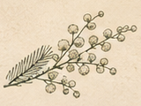
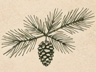

<meta charset="UTF-8">
<meta name="viewport" content="width=device-width, initial-scale=1">
<meta name="claude:viewport-fit-sides" content="cover">
<link rel="preconnect" href="https://fonts.googleapis.com">
<link rel="preconnect" href="https://fonts.gstatic.com" crossorigin>
<link rel="stylesheet" href="https://fonts.googleapis.com/css2?family=Cormorant+Garamond:wght@500;600;700&family=Be+Vietnam+Pro:wght@400;500;600;700&display=swap">
<link rel="stylesheet" href="style.css">
<title>Bảo tàng Hoa Đà Lạt</title>
<meta name="description" content="Bảo tàng Hoa Đà Lạt: lịch sử nghề trồng hoa qua năm làng hoa Hà Đông, Thái Phiên, Vạn Thành, Xuân Thọ và Đa Thiện.">

<header class="site-header">
  <div class="wrap">
    <a class="brand" href="index.html">Bảo tàng Hoa Đà Lạt</a>
    <nav class="nav" id="nav" aria-label="Điều hướng chính">
      <a href="index.html" aria-current="true">Trang chủ</a><a href="hat-giong.html">Hạt giống ký ức</a><a href="index.html#lang-hoa">Năm làng hoa</a><a href="gieo-mam.html">Những người gieo mầm</a><a href="cong-nghe.html">Từ đôi bàn tay đến công nghệ</a><a href="festival.html">Festival Hoa</a><a href="kho-ky-uc.html">Kho ký ức</a>
    </nav>
    <button class="menu-btn" id="menuBtn" aria-expanded="false" aria-controls="nav">Menu</button>
  </div>
</header>

<main id="top">
<section class="hero-home">
  <div class="wrap">
    <h1>Bảo tàng làng hoa Đà Lạt</h1>
    <div class="rule"></div>
    <p class="sub">Nơi lưu giữ ký ức, tôn vinh văn hóa trồng hoa Đà Lạt</p>
    <a class="btn" href="hat-giong.html">Khám phá bảo tàng →</a>
  </div>
</section>

<section class="block" style="padding-block:0">
  <div class="wrap hero-icons-wrap">
    <nav class="icons" aria-label="Các mục chính"><a class="icon-link" href="hat-giong.html"><span>Lịch sử làng hoa</span></a><a class="icon-link" href="index.html#lang-hoa"><span>Năm làng hoa</span></a><a class="icon-link" href="gieo-mam.html"><span>Con người & nghề hoa</span></a><a class="icon-link" href="kho-ky-uc.html"><span>Tư liệu & hiện vật</span></a><a class="icon-link" href="festival.html"><span>Đà Lạt & hoa hôm nay</span></a></nav>
  </div>
</section>

<section class="block" id="lang-hoa">
  <div class="wrap">
    <div class="section-head">
      <p class="eyebrow">Năm làng hoa</p>
      <h2>Mỗi làng một bản sắc</h2>
    </div>
    <div class="object-grid grid-5"><a class="card" href="ha-dong.html"><span class="tag">1938</span><h3>Hà Đông</h3><p>Cái nôi của nghề hoa và dấu chân mở cõi.</p><span class="more">Xem làng hoa →</span></a><a class="card" href="thai-phien.html"><span class="tag">1956</span><h3>Thái Phiên</h3><p>Thủ phủ hoa cúc và những đêm thắp đèn.</p><span class="more">Xem làng hoa →</span></a><a class="card" href="van-thanh.html"><span class="tag">Khoảng 1960</span><h3>Vạn Thành</h3><p>Vương quốc hoa hồng và nghệ thuật ghép cành.</p><span class="more">Xem làng hoa →</span></a><a class="card" href="xuan-tho.html"><span class="tag">1954</span><h3>Xuân Thọ</h3><p>Vựa lay-ơn của cao nguyên.</p><span class="more">Xem làng hoa →</span></a><a class="card" href="da-thien.html"><span class="tag">1956</span><h3>Đa Thiện</h3><p>Thủ phủ hoa chất lượng cao.</p><span class="more">Xem làng hoa →</span></a></div>
  </div>
</section>

<section class="block alt">
  <div class="wrap">
    <div class="section-head">
      <p class="eyebrow">Khám phá</p>
      <h2>Bắt đầu từ đâu?</h2>
    </div>
    <div class="object-grid grid-4"><a class="card" href="hat-giong.html"><h3>Hạt giống ký ức</h3><p>Năm làng hoa lan tỏa và tiếp nối nhau từ năm 1938.</p><span class="more">Khám phá →</span></a><a class="card" href="gieo-mam.html"><h3>Những người gieo mầm</h3><p>Năm tính cách của người trồng hoa qua nhiều thế hệ.</p><span class="more">Khám phá →</span></a><a class="card" href="cong-nghe.html"><h3>Từ đôi bàn tay đến công nghệ</h3><p>Bốn giai đoạn, từ canh tác phụ thuộc thời tiết đến kỹ sư nông nghiệp.</p><span class="more">Khám phá →</span></a><a class="card" href="festival.html"><h3>Festival Hoa Đà Lạt</h3><p>Từ Lễ hội Sắc hoa năm 2004 đến kỳ XI dự kiến năm 2026.</p><span class="more">Khám phá →</span></a></div>
  </div>
</section>

<section class="block visit">
  <div class="wrap">
    <div class="section-head">
      <p class="eyebrow" style="color:var(--gold)">Thông tin tham quan</p>
      <h2>Ghé thăm bảo tàng</h2>
    </div>
    <div class="visit-card">
      <h3>Đang cập nhật</h3>
      <p>Giờ mở cửa, địa chỉ và thông tin liên hệ sẽ được bổ sung khi có xác nhận.</p>
    </div>
  </div>
</section>
</main>

<footer>
  <div class="wrap">
    <div><strong>Bảo tàng Hoa Đà Lạt</strong><br>Nơi ký ức nở thành hoa.</div>
    <div>Thông tin tham quan và liên hệ đang được cập nhật.</div>
  </div>
</footer>

<script>
  const menuBtn = document.getElementById('menuBtn');
  const nav = document.getElementById('nav');
  menuBtn.addEventListener('click', () => {
    const open = nav.classList.toggle('open');
    menuBtn.setAttribute('aria-expanded', String(open));
  });
  document.querySelectorAll('.chip').forEach(chip => {
    chip.addEventListener('click', () => {
      const f = chip.dataset.filter;
      document.querySelectorAll('.chip').forEach(c => c.setAttribute('aria-pressed', String(c === chip)));
      document.querySelectorAll('.item').forEach(o => {
        o.hidden = !(f === 'all' || o.dataset.cat === f);
      });
    });
  });
</script>
